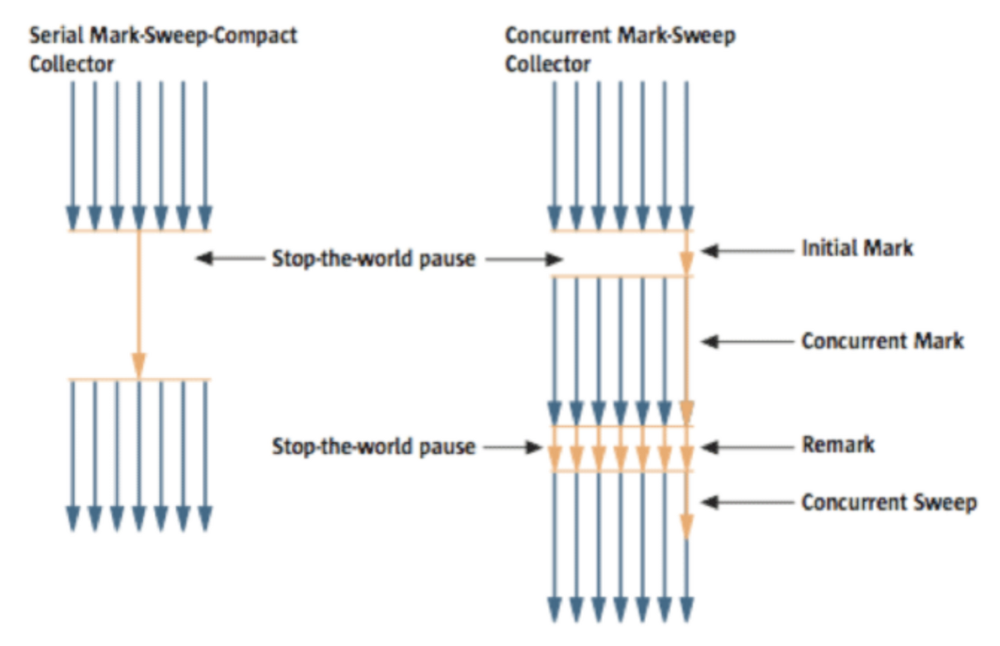
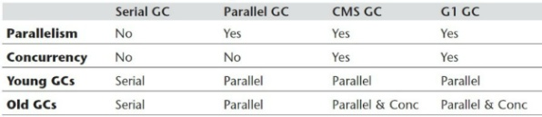
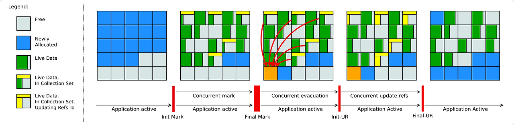
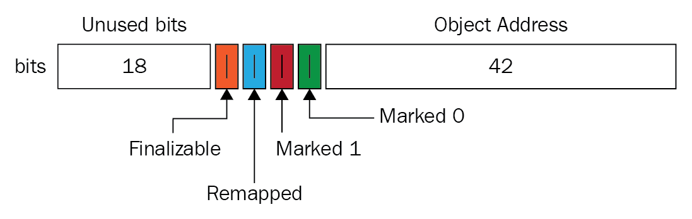
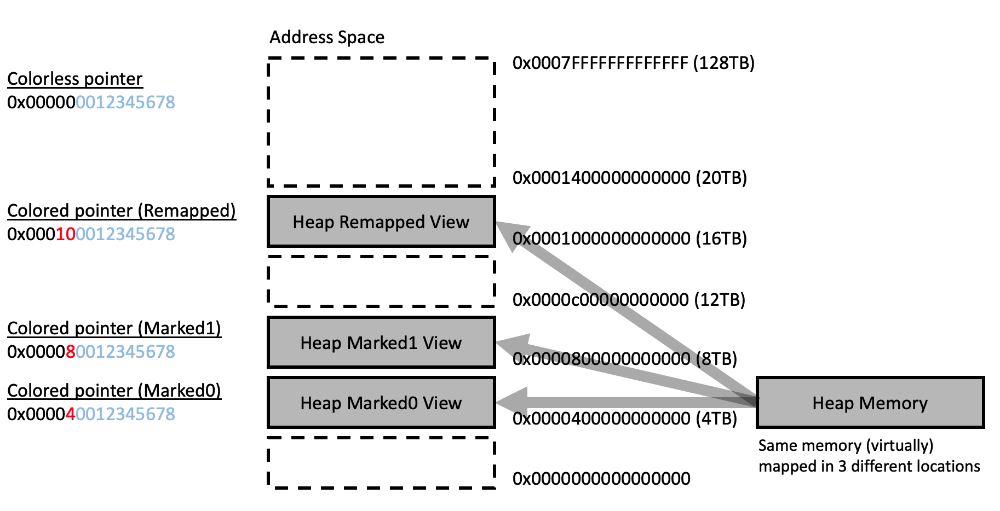
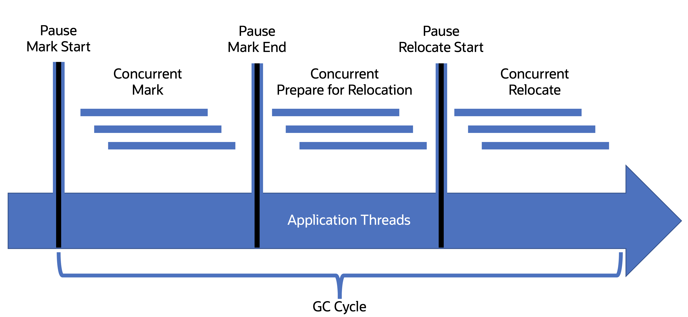

3.5 클래식 가비지 컬렉터
- 클래식 가비지 컬렉터는 고성능 저지연의 최첨단 기술이 아니지만 오랜기간 실전에서 사용되어왔음
- 신세대
- 시리얼
- 파뉴
- 패러렐 스캐빈지
- 구세대
- 시리얼 올드
- CMS
- 페러렐 올드
- 신세대, 구세대 경계
- G1
시리얼 컬렉터
특징
- 가장 기초적이고 오래된 컬렉터
- 단일 스레드로 동작한다. GC
- 마크 카피 알고리즘 사용
- 가비지 컬렉션이 시직되면 회수가 완료될 때까지 모든 스레드가 멈춰 있어야 한다.
- “스톱 더 월드” 를 줄이기 위해 페러럴 컬렉터 , CMS ,G1, 섀년도어, ZGC 가 등장 했으나. 완벽하게 이 현상을 없앨 컬렉터는 등장하지 않았다.
장점 - 다른 컬렉터의 단일 스레드 알고리즘이 간단하고 효율적
- 가용 메모리가 적은 환경에서 알고리즘이 요구하는 메모리 샤용량이 가장 적다.
파뉴 컬렉터
특징
- 시리얼 컬렉터의 병렬화 버전으로 다중 스레드를 제외한 모든 특징이 시리얼 컬렉터 와 같다.
- 마크 카피 알고리즘 사용
- 가장 먼저 삭제된 가비지 컬렉터
- 단일 코어 환경에서 시리얼 컬렉터보다 성능이 떨어질 뿐더러, 하이퍼 스레딩을 활용한 듀얼 코어 환경에서도 성능이 더 낫다는 보장이 없다.
- 코어수가 늘어나면 가비지 컬렉션 중 시스템 자원을 효율적으로 사용할 가능성이 커진다.
가비지 컬렉터에서의 병렬과 동시
- parallel :Gc 스레드 사이의 관계를 설명한다. 스레드 다수가 동시에 작업을 수행함을 뜻한다. 이때 사용자 스레드는 정지 상태
- concurrent : GC 스레드와 사용자 스레드의 관계를 설명한다. GC 스레드와 사용자 스레드가 동시에 일하며 사용자 스레드가 정지하지 않는다.
패러렐 스캐빈지 컬렉터 ( ps 컬렉터 )
특징
- 마크-카피 알고리즘 사용
- 여러 스레드를 이용해 병렬로 컬렉팅 수행
- 스톱 더 월드를 최소화 하는데 집중하는 CMS 와 같은 컬렉터들과 다르게 처리량을 제어하는 것이 주된 목표이다.
- 사용자와 상호작용 프로그램보다 계산, 분석 프로그램에 적합
- 적응형 조율 전략 :
-XX:+UseAdaptiveSizePolicy사용시 가상 머신이 모니터링을 통해 최대 처리량을 제공할 수 있는 신세대 크기, 에덴 생존자 공간의 비율, 구세대로 옮겨갈 객체의 크기 등을 자동으로 조율해준다.
시리얼 올드 컬렉터
- 단일 스레드
- 마크- 컴팩트 알고리즘 사용
페러렐 올드 컬렉터
- ps 컬렉터의 구세대용 버전
- 멀티 스레드로 병렬 컬렉팅 수행
- 마크-컴팩트 알고리즘 사용
- ps 컬렉터 - 페럴럴 올드 컬렉터의 조합으로 처리량을 극대화할 수 있다.
CMS (concurrent mark sweep) 컬렉터

특징
- mark , sweep 과정이 모두 사용자 스레드와 동시에 수행된다.
- 프로세스의 일시 정지 시간을 최소화 하는게 주된 목적
- 응답 시간이 중요한 프로그램에 사용된다.
- 마크 - 스윕 알고리즘을 개선하여 사용한다. 단계는 아래와 같다.
- 최초 표시 : GC 루트와 직접 연결된 객체들만 표시해 빠르게 끝난다.
- 동시 표시 : GC 루트와 연결된 객체들로 그래프를 전체 탐색한다. 스레드가 멈추지 않는다.
- 재표시 : 동시 표시 중 사용자 스레드가 참조 관계를 변경한 객체들을 ( 삼색 표시 알고리즘 중 증분업데이트 )를 사용하여 수정한다.
- 동시 쓸기 : 사용자 스레드의 중지 없이 표시했던 객체들을 회수한다.
- 처리 시간이 오래걸리는 동시 표시, 동시 쓸기 를 스레드 중지없이 동작하기 때문에 “stop the world” 현상이 짧다.
단점
- 프로세서 자원에 민감하다. 동시 수행 단계에서 프로세서의 일부를 할당 받는것은 매한가지이기 때문, 운영체제의 선점형 스케줄링 기법을 적용한 점진적 동시 마크 스윕 사용하여 GC 스레드와 사용자 스레드를 교대로 실행해 GC 스레드가 프로세스를 독점하는 시간을 최소화 해 문제를 해결한다.
- 이를 점진적 동시 마크 스윕 i-cms 라 하나 성과가 미미해 삭제되었다.
- 사용자 스레드는 멈추지 않고 계속해 동작해야하므로 메모리 공간이 충분히 확보되어야한다. 그러나, 동시 표시, 동시 쓸기 중 사용자 쓰레드가 생성하는 쓰레기들을 회수하지 못해 생성되는 부유 쓰레기 문제가 존재한다.
따라서, 구세대가 일정 비율 이상 차게되면 CMS를 수행하게 하는
-XX:CMSInitiatingOccupancyFraction매개변수를 제공한다. - CMS 는 마크-스윕 알고리즘을 기반으로 하기 때문에 메모리 단편화 문제가 존재한다. 단편화로 인해 객체를 할당할 연속된 공간이 존재하지 않으면 전체 GC를 수행 해야만해 성능이 저하된다. 따라서,
-XX:UseCmsCompactAtFullCollection을 제공해 CMS 가 전체 GC 수행시 조각모음을 수행한다.
G1 컬렉터 ( 가비지 우선 컬렉터 , Garbege First )
- 지연 시간을 제어하는 동시에 처리량을 최대한 높이는 것이 목적이다.
- 부분 회수, 리전을 회수 단위로 하는 메모리 레이아웃을 개척
- 정지 시간 예측 모델 : 목표시간을 설정하면 가비지 컬렉터가 쓰는 시간이 목표 시간을 넘지 않도록 통제하는 모델
- G1 은 정지 시간 예측 모델을 적용하고자 했는데 방법은 아래와 같다.
- 세대 별로 회수를 수행하지 않고 회수할 대상이 많은 영역을 회수 영역을 고르는 기준이된다.
- 연속된 자바 힙을 동일한 크기의 여러 독립 리전으로 나누고, 각 리전은 필요에 따라 신세대 (에덴,생존자) 혹은 구세대 공간이 될 수 있다.
G1 컬렉터 동작
- 최초 표시
시작 단계 스냅숏생성, 사용자 스레드를 일시 정지하나 매우 짧은 시간에 끝난다. - 동시 표시
객체들의 도달 가능성 분석, 전체 객체 그래프를 재귀적으로 스캔에 회수 대상을 찾는다. 사용자 스레드와 동시에 수행된다. - 재표시
시작단계 스냅숏 이후 변경된 소수의 객체만 처리한다. 사용자 스레드가 잠시 정지되나 소수의 객체이므로 빠르게 끝난다. - 복사 및 청소
통계 데이터를 기초해 리전들을 회수 가치와 비용에 따라 정렬하고 설정헀던 정지 시간에 부합하도록 회수 계획을 세운다.
생존 객체들을 빈 리전으로 이동 하는데 이때 사용자 스레드는 잠시 정지된다.
- 정지 시간의 기대값은 현실적인 값이어야한다. 너무 짧게 설정 할 경우에 아주 일부 리전만 회수하고 종료되는데, 메모리 할당 속도를 따라잡지 못하면 쓰레기가 점차 쌓여 힙이 가득 차게된다. 이경우 전체 GC가 일어나 전체 성능이 감소한다.
G1 대 CMS
공통점
- 일시 정지 시간을 제어하는데 집중
- 세대간 참조를 다루기 위해 카드 테이블을 구현
- 카드 테이블 관리를 위해 사후 쓰기 장벽 사용
차이점
- G1 은 최대 정지 시간을 지정하고, 메모리 레이아웃을 리전 단위로 나눔
- G1 마크-컴팩트 기반, CMS 는 마크-스윕 기반임
- 동시 작업을 위해 G1 은 시작 단계 스냅숏 알고리즘, CMS 증분 업데이트 알고리즘 사용
- G1 은 더 복잡한 카드 테이블로 많은 메모리를 사용하고, 이로 인해 작업량도 많아 컴퓨팅 자원도 많이 소비한다.
- CMS의 쓰기 장벽은 동기적이나, G1은 비동기적으로 동작한다.
- 즉, G1 은 메모리 가 많고 멀티 프로세서 환경에서 효율이 좋다.

3.6 저지연 가비지 컬렉터
- 가비지 컬렉터 성능은 처리량, 지연시간, 메모리 사용량 세가지로 측정된다.
- 세 지표를 모두 괄목할만한 성능을 내는 완벽한 컬렉터를 만들기는 어렵거나 불가능하다.
- 하드웨어의 발전으로 컬렉터의 메모리 사용량은 문제가 되지 않는다.
- 처리량 은 사양이 좋은 하드웨어를 사용하면 그만큼 줄어든다.
- 지연 시간 은 메모리량 늘릴때 탐색할 영역이 커져 악영향을 주기 때문에 가비지 컬렉터에서 가장 중요한 성능 지표이다.
- G1, CMS 는 시작 단계 스냅샷, 증분 업데이트로 표시 단계를 동시에 수행할 수 있게되었으나 모든과정이 동시에 수행되지는 않는다.
- 모든 과정이 동시에 수행 되는 컬텍터는 셰넌 도어와 zgc 이다.
셰넌도어
- 오라클 jdk 에서 사용 불가능하다
- 힙 크기와 상관 없이 가비지 컬렉션으로 인한 일시정지를 10ms 이내로 동작하게 하는것이 목표
- 표시 단계, 객체 회수 후 마무리 작업까지 동시 수행한다.
- G1의 메모리 레이아웃 ( 리전, 거대 리전 )을 오라클의 ZGC 보다 잘 계승했다.
개선 사항
- 동시 모으기 지원, G1은 모으기 단계를 병렬로 수행했지만 사용자 스레드는 정지되어야 했다.
- 세대 단위 컬렉션을 사용하지 않는다.
- 컴퓨팅 자원을 많이 사용하는 기억 집합 대신 연결 행렬로 리전간의 참조 관계를 기록한다.
동작 방식 
- 최초 표시
GC 루트에서 직접 참조 하는 객체들을 표시, 사용자 스레드가 일시 정지하나 매우 짧다. GC 루트 수에 수행 시간이 비례한다. - 동시 표시
객체 그래프를 타고 힙을 탐색하며 도달 가능한 모든 객체를 표시한다. 객체 수에 수행 시간이 비례한다. - 최종 표시
보류중인 모든 표시를 완료하고 GC 루트 집합을 다시 스캔 한다. 짧게 일시 정지된다. - 동시 청소
살아 있는 객체가 하나도 없는 리전들을 청소한다. - 동시 이주
회수 집합 안에 살아 있는 객체들을 다른 빈 리전으로 복사한다. 읽기 장벽과 포워딩 포인터를 이용해 사용자 스레드와 객체 복사 작업의 동시성 문제를 해결한다. - 최초 참조
빈 리전으로 객체들을 이주 한 다음 모든 참조를 이주한 새로운 주소로 갱신한다. ( 이 작업을 참조 갱신 이라 한다. )
이주 단계의 모든 GC 스레드와 사용자 스레드가 이주를 끝마쳤음을 보장하기만 한다. 사용자 스레드를 짧게 일시 정지 한다. - 동시 참조 갱신
실제 참조 갱신을 시작한다. 수행시간은 메모리에 존재하는 참조 수에 비례한다. 물리 메로리 주소의 순서대로 참조 타입을 선형 검색하여 이전 값을 새로운 값으로 갱신 한다. - 최종 참조 갱신
힙의 참조를 갱신한 후에 GC 루트 집합의 참조도 갱신한다. 일시 정시되며 GC 루트 개수에 비례한다. - 동시 청소
회수 집합의 모든 리전에 살아 있는 객체가 남아 있지 않게 된다. 그래서 동시 청소가 가능하며 할당 공간을 확보할 수 있다.
포워딩 포인터
- 동시 이주를 가능케 하는 핵심 기술
- 기존 방식
- 메모리 변경이 일어난 후에 메모리 보호 트랩을 설정하여 옛 주소로 프로그램이 접근하면 트랩에 의해 새로운 주소를 사용하게끔 한다.
- 운영체제의 지원이 필수적이며, 사용자 모드 <-> 커널 모드의 전환으로 비용이 크다.
- 포워딩 포인터
- 원래의 객체 레이아웃 구조 상단에 참조 필드를 추가한다. 동시 이주가 아닌경우에 참조필드가 객체 자신을 가리킨다.
- 옛 객체의 포워딩 포인터의 주소가 GC 이후 이주된 새로운 주소 공간을 가리키게 하면된다.
- 옛 객체가 아직 회수되지 않았더라도 기존 참조를 사용해 새로운 객체를 포워딩 된다.
- 스레드의 경쟁 상태 문제가 존재하게된다. 그래서 CAS로 동기화 한다.
- 객체로의 접근을 모두 보호하려면 읽기 장벽 쓰기 장벽을 모두 사용한다.
추가된 개선 사항들
- 로드 참조 장벽 도입
- 객체 참조 타입의 데이터를 읽거나 쓸 때만 끼어드는 메모리 장벽 모델
- 원시타입에는 장벽이 존재하지 않아 오버헤드가 줄어든다.
- 포워드 포인터를 객체 해더에 통합
- 객체 헤더의 마크 비트에 포워드 포인터 추가
- 스택 워터마크를 활용한 스레드 스택 동시 처리
- 스레드 스택에서 최상위 스택만이 변화가 생긴다. 그 아래 프레임은 사용자 스레드가 실행중에도 GC 스레드가 스캔할 수 있음을 의미한다.
- 사용자 스레드가 메서드를 반환하거나 예외등으로 스택 프레임을 파괴했을 경우에 워터 마크 (수위) 를 사용한다.
- 최초 표시때 일시 정지 후 진행하던 작업을 동시에 수행할 수 있게 되었다.
사용자 스레드가 최상위 스택 프레임을 파괴할 때마다 아래의 작업을 수행한다.
- 워터 마크를 한칸 낮춘다.
- GC 스레드가 워터 마크 위로는 스캔하지 못하게 막는다.
- 1의 결과로 워터 마크위로 떠오른 스택 프레임을 스캔한다.
ZGC
- 기본적으로 세대 구분을 하지 않는다.
- 리전 기반 메모리 레이아웃 사용
- 동시 마크-컴팩트 알고리즘 사용을 위해 읽기 장벽, 컬러 포인터, 메모리 다중 매핑 기술을 활용
세대를 구분 하지 않는 ZGC
리전 기반 메모리 레이아웃
- g1, zgc의 메모리 리전과 차이점은 동적으로 생성/파괴될 수 있으면서 크기 또한 동적이다.
- 소 리전 : 2MB
- 중 리전 : 32MB
- 대 리전 : 크기가 동적이며 ( 4mb 이상 ) , n*2MB 큰 객체를 하나를 담기위해 사용한다.
객체의 크키가 크기 때문에 재할당 작업에서 제외된다.
병렬 모으기와 컬러 포인터
-
컬러 포인터

(위의 이미지의 객체 주소는 42bit 인데 jdk 12 버전 까지의 해당 사항이다.)- 병렬 모으기를 지원하기 위해 zgc 에서 읽기 장벽과 함께 사용하는 기술이다.
- 컬러 포인터는 JVM 에서 메모리를 가리키는데 사용하기 위해 재정의한 포인터 기술 이다.
- 객체의 생사 여부를 판단 하는 표시를 컬러 포인터에서는 객체를 가리키는 포인터에 직접 표시한다. 포인터 자체에 추가 정보를 직접 저장하는 기술이다.
시리얼 컬렉터는 객체 헤더에, g1,섀년 도어는 비트맵 구조에 기록한다. - 리눅스는 46bit ( 64 TB) 의 메모리만 사용가능한데, 컬러 포인터는 객체 주소를 표현 하는 비트를 44 bit 로 제한 하고 남은 20 bit 중 4bit를 플래그 bit 로 사용한다.
- 플래그 비트를 통해 삼색 표시 상태(동시 접근 가능성 판단하는 삼색 알고리즘 )를 알 수 있다.
- Finalizable : finalize()로 접근 가능한가
- Rempped : 해당 객체가 재매핑 집합에 추가되었는가
- Marked1 : 객체가 추가 마킹 단계에서도 여전히 유효한가
- marked0 : 객체가 초기 마킹 단계에서 마킹 되었는가 ( 회색 -> 검은색 )
-
컬러 포인터 장점
- 한 리전 안의 생존 객체들이 이동하면 그 즉시 해당 리전을 재활용 가능 하다
- 가비지 컬렉션 과정에서 메모리 장벽수를 줄일 수 있다. 정보를 포인터 자체에 두기 때문에 일부 쓰기 장벽이 필요 없어지기 때문이다.
- 컬러 포인터를 객체 표시 및 재배치와 관련해 더 많은 정보를 담을 수 있는 확장 가능한 저장 구조로 쓸 수 있다.
- 다중 매핑

- 컬러 포인터를 적용하려면 재정의한 포인터가 기계어로 변환되어 프로세서에 전달될때 프로세서가 포인터에 포함된 플래그 비트를 구분할 수 있어야 한다. 그러나 기본적으로 프로세서는 포인터의 전체 값을 메모리 주소 값으로 인식한다.
- 가상 주소 마스크로 쉽게 해결할 수 있었던 스팍용 솔라리스 시스템에서와 다르게 x86 시스템에서는 가상 메모리 매핑 기술과 관련한 해법인 다중 매핑을 도입했다.
- 다중 매핑은 다대일 매핑이다. 논리적 주소 여러개와 물리 메모리 공간 하나가 매핑된다. 논리적 주소들은 각각 포인터의 색상 플래그에 해당한다.
ZGC 동작 방식

- 표시 시작 : g1,셰넌도어의 최초 표시 단계와 같다
- 동시 표시 :
전체 객체 그래프를 탐색하고 표시한다. 짧은 일시정지가 일어나며 zgc의 표시는 객체가 아닌 포인터에 이루어진다. marked0,marked1 플래그가 갱신된다. - 동시 재배치 준비 :
청소해야할 리전들을 선정하여 재배치 집합을 만든다. zgc는 가비지 컬렉션 수행시마다 모든 리전을 수행한다. G1이 기억 집합을 관리하는 비용 대신 전체 스캔 하는 비용을 선택한 것이다. - 동시 재배치 :
재배치 집합 안의 생존 객체들을 새로운 리전으로 복사한다. 컬러 포인터 덕분에 객체가 재배치 집합에 속하는지는 참조만 보고 알 수 있다.- 포인터의 자가 치유 : 사용자 스레드가 재배치 집합에 포함된 객체에 동시 접근시 메모리 장벽이 끼어들어 즉시 해당 리전의 포워드 테이블을 확인해 변경된 새로운 객체로 사용자 스레드 포워드 시킨다. 또한, 해당 참조의 값도 새로운 객체를 가리 키도록 갱신한다.
- 동시 재매핑 :
힙 전체에서 재배치 집합에 있는 옛 객체들을 향하는 참조 전부를 갱신하는 작업
zgc에서는 재매핑 단계를 다음 가비지 컬렉션이 시작되는 주기에 동시에 수행한다. 두 단계 모두 객체 그래프 전체를 탐색해야하기 때문이다.
세대 구분 ZGC
- 세대를 구분해 젊은 객체들을 더 자주 회수할 수 있다는 장점이 존재한다.
- 기존 zgc 는 모든 객체를 대상으로 회수 작업을 해야한다는 문제가 있다.
- 약한 세대 가설에 따라 젊은 객체는 더 일찍 죽는데 세대를 구분하면 더 많은 메모리 확보가 가능하다.
- 세대간 참조를 위해 다른 GC 들과 마찬가지로 쓰기 장벽을 사용한다.
- 다중 매핑 메모리 제거
- 실제 메모리 사용량보다 3 배 많게 표시되던 다중 매핑 메모리를 제거했다.
- 컬러 포인터에서 관련 플래그 들이 사라졌다.
- 다양한 장벽 최적화
- 기업 집합 장벽
- 시작 단계 스냅숏 표시 장벽
- 쓰기 장벽 버퍼
- 장벽 패치
- 이중 버퍼를 이용한 기억 집합 관리
- 세대간 참조를 카드 테이블에 저장하는데 ZGC에서는 비트맵을 사용해 정확한 위치를 기록한다.
- 구세대 리전 각각에 기억 집합 비트맵 한쌍을 가지고 있다.
- 비트맵 하나는 애플리케이션 스레드들의 쓰기 장벽에서 수정된다.
- 나머지 비트맵 하나는 읽기 전용으로 gc 스레드가 참고한다.
- 밀집도 기반 리전 처리
- 회수 리전을 정하기 위해 신세대 리전들의 밀집도를 기준으로한다.
- 생존자 리전들은 다음번 신세대 gc때 밀집도가 더 높아져 회수 대상이 될 가능성이 커진다.
- 거대 객체 관리
- 거대한 객체는 신세대에 바로 할당되고 객체 재배치 없이 노화시킬 수 있다.
3.7 적합한 가비지 컬렉터 선택하기
앱실론 컬렉터
- 노옵 가비지 컬렉터
- 가비지 컬렉터의 영향을 배제 해야하는 성능,스트레스 테스트에 이용한다.
- 단 몇 분 몇초만 동작해 부하가 적고 메모리 회수 활동을 하지 않는 어플리케이션에 적합하다.
컬렉터 간 비교 및 선택
컬렉터 선택 요인
- 어플리케이션의 주목적
- 처리량
- 일시 정지 시간
- 어플리케이션 구동 서브시스템
- jdK 제공자
지연 시간이 중요한 상황 (브라우저 - 서버 시스템)에서의 선택 흐름
- 자금 사정이 여유롭고 최적화 경험이 부족 -> 징 VM, C4
- 상용 제품을 쓸 여유가 없지만, 소프트웨어 하드웨어 모델을 제어할 수 있다면 -> ZGC
- 레거시 시스템의 경우 -> 메모리 용량에 따라 다르다.
- 4~6 GB -> CMS
- 6GB 이상 -> G1
G1 참조 관계를 유지하기 위해서 더 많은 메모리를 사용하기 때문이다.
ORACLE 가비지 선택 메뉴얼
- 100mb 이내의 데이터를 다룬다 -> 시리얼 컬렉터
- 단일 프로세서만 사용하며 일시 정지 시간에 제약이 없다 -> 시리얼 컬렉터
- 최대성능이 가장 중요하고, 지역 시간에 제약이 없거나 1초이상 허용한다 -> 기본 컬렉터, 페러렐 컬렉터
- 처리량 보다 응답 시간이 중요하고 STW가 짧아야 한다 -> G1
- 응답 시간이 매우 중요하다 -> 세대 구분 ZGC
3.8 실전 메모리 할당과 회수 전략
-
단순한 시리얼 컬렉터를 기반으로 실습한다.
-XX:+UseSerialGc -
시리얼 컬렉터는 마크-카피 알고리즘을 사용하므로 신세대, 구세대 공간이 1:1 이다.
-
또, 신세대 공간은
--XX:SurvivorRatio=8로 8:1 로 에덴 공간, 생존자 공간을 나눌 수 있다. -
에덴 공간이 가득 찼고 생존자 객체 크기가 공간 크기보다 크다면 할당 보증 메커니즘에 의해 구세대로 이동한다.
-
객체의 나이로 구세대로 이동 시킬 수 있는데,
--XX:TargetSurvivorRatio를 사용해 생존자 공간이 찬 비율에 따라 구세대로 승격 가능하다.